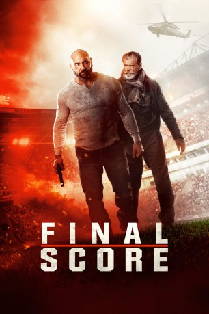

#11175 Final Score
 
 IMDB-Wertung: 5.7 / 10
IMDB-Wertung: 5.7 / 10  Tomatometer: 68
Tomatometer: 68  Metascore: 53
Metascore: 53 
Während einer Sportveranstaltung überfallen schwerbewaffnete Kriminelle das Stadion und nehmen jeden als Geisel. Sie verlangen ein Lösegeld. Ein Ex-Soldat ist zufällig unter den Gästen und nimmt den Kampf alleine auf. 35.000 Zuschauer, darunter die Tochter eines gefallenen Ex-Kameraden, muss er nun retten…
Jahr: 2018
Dauer: 105 Minuten
FSK: 16
Land: England Studio: KSMTonspuren: DD5.1 - ,
Untertitel:
Auflösung: 1080p (1920x808) Größe: 8120 MB
Genre: Action, Thriller, Drama
Regisseur: Scott Mann
Drehbuch: Jonathan Frank, David T. Lynch, Keith Lynch
Soundtrack: James Edward Barker, Tim Despic
Darsteller:
Datei: X:\2018(A-F)\Final Score (2018, FSK16, 1920x808).mkv seit 09.05.2019
Festplatte: HD 2017(A-Z)-2018(A-F)
 Es gibt insgesamt 151 Filme in der Gruppe '2018(A-F)'
Es gibt insgesamt 151 Filme in der Gruppe '2018(A-F)'